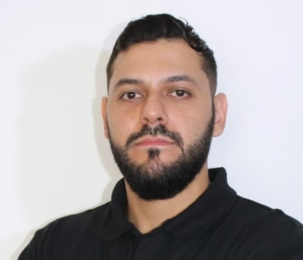

Sites & sistemas web
Landing pages, sites, painéis e ferramentas para necessidades reais.
DESENVOLVEDOR INDEPENDENTE
Transformo ideias em experiências digitais simples, funcionais e bem construídas.
Estudante de Gestão da Tecnologia da Informação na Fatec Tatuí. Trabalho principalmente com desenvolvimento web e também crio sistemas e aplicativos.
WEB SISTEMAS APPS

NA PRÁTICA
Da ideia à interface, com foco em utilidade e experiência.
Landing pages, sites, painéis e ferramentas para necessidades reais.
Projetos próprios com atenção à navegação, visual e desempenho.
PROJETO EM DESTAQUE
Aplicativo de mídia criado para Android TV, celulares e tablets.